_bends_8.gif)
_bends_9.gif)
_bends_13.gif)
_bends_18.gif)
_bends_24.gif)
_bends_27.gif)
_bends_28.gif)
_bends_32.gif)
_bends_41.gif)
_bends_44.gif)
_bends_51.gif)
_bends_54.gif)
_bends_61.gif)
_bends_72.gif)
_bends_80.gif)
_bends_81.gif)
_bends_89.gif)
_bends_90.gif)
_bends_96.gif)
_bends_102.gif)
_bends_107.gif)
_bends_108.gif)
_bends_109.gif)
_bends_112.gif)
_bends_116.gif)
_bends_125.gif)
_bends_134.gif)
_bends_135.gif)
_bends_144.gif)
_bends_145.gif)
_bends_152.gif)
_bends_153.gif)
_bends_154.gif)
_bends_161.gif)
_bends_162.gif)
_bends_164.gif)
_bends_170.gif)
_bends_179.gif)
_bends_206.gif)
_bends_214.gif)
_bends_221.gif)
_bends_223.gif)
_bends_230.gif)
_bends_232.gif)
_bends_233.gif)
_bends_234.gif)
_bends_235.gif)
_bends_236.gif)
_bends_238.gif)
_bends_241.gif)
_bends_246.gif)
_bends_247.gif)
_bends_254.gif)
_bends_257.gif)
_bends_262.gif)
_bends_278.gif)
_bends_284.gif)
_bends_288.gif)
_bends_294.gif)
_bends_298.gif)
_bends_309.gif)
_bends_310.gif)
_bends_312.gif)
_bends_316.gif)
_bends_317.gif)
_bends_318.gif)
_bends_320.gif)
_bends_321.gif)
_bends_322.gif)
| {1} | 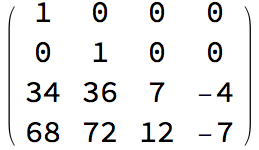 | |
|
|||||||
| {3} | |
|
||||||||
| {4} | |
|
|
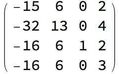 | ||||||
| {8} | |
|||||||||
| {9} | |
|
||||||||
| {10} | |
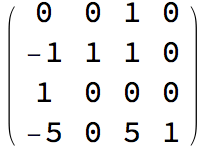 | |
|||||||
| {11} | |
|||||||||
| {1, 9} | |
|||||||||
| {1, 10} | |
|
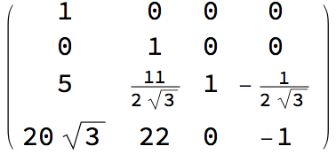 | |||||||
| {1, 11} | |
|
|
|||||||
| {3, 4} | |
|||||||||
| {3, 8} | |
|
|
|
||||||
| {3, 9} | |
|||||||||
| {3, 10} | |
|||||||||
| {3, 11} | |
|
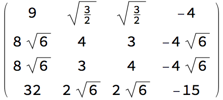 | |||||||
| {4, 8} | |
|
||||||||
| {4, 9} | |
|
|
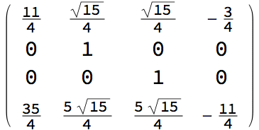 | ||||||
| {4, 10} | |
|
|
|||||||
| {4, 11} | |
|||||||||
| {8, 11} | |
|||||||||
| {9, 11} | 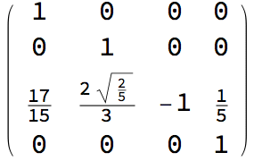 | |||||||||
| {10, 11} | 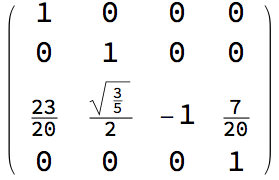 | |||||||||
| {1, 9, 11} | |
|||||||||
| {1, 10, 11} | |
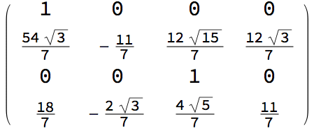 | |
|||||||
| {3, 4, 8} | |
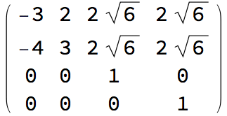 | 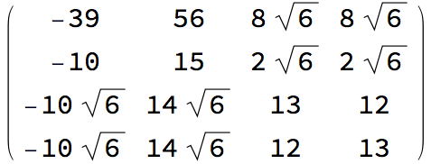 | |||||||
| {3, 4, 9} | |
|
|
|
|
|
||||
| {3, 4, 10} | |
|
||||||||
| {3, 4, 11} | |
|
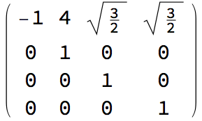 | |||||||
| {3, 8, 11} | |
|
||||||||
| {3, 9, 11} | |
|||||||||
| {3, 10, 11} | 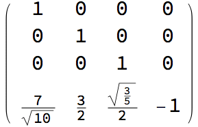 | |||||||||
| {4, 8, 11} | |
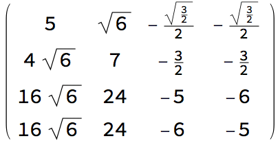 | |
|||||||
| {4, 9, 11} | |
|||||||||
| {4, 10, 11} | |
|
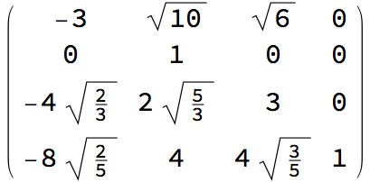 | |||||||
| {3, 4, 8, 11} | ||||||||||
| {3, 4, 9, 11} | |
|
|
|||||||
| {3, 4, 10, 11} | |
|
|
|
|
|